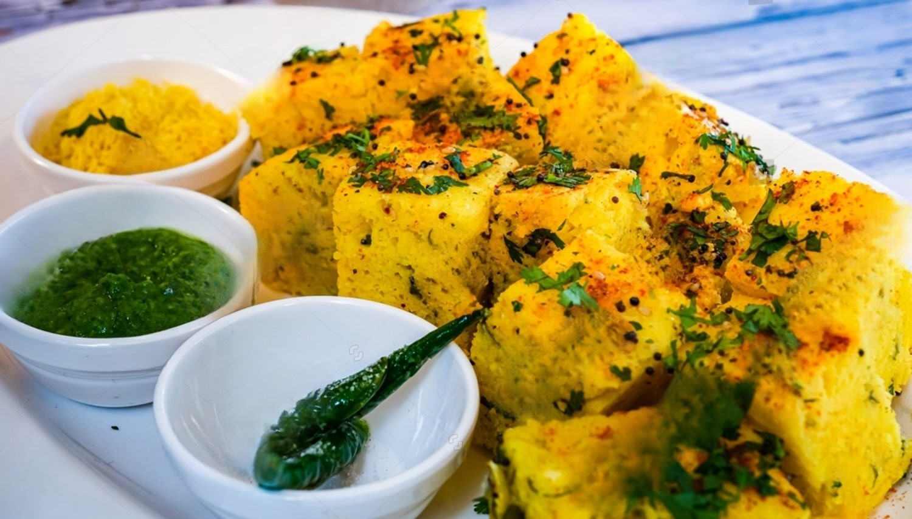

Dhokla
Dhokla is a fluffy and savory steamed cake made from fermented chickpea batter, popular in Gujarat, India. It's often served as a snack or breakfast dish.
Time: 30 minutes (plus fermentation time)
Protein:
- Chickpea flour (1 cup) provides around 22g of protein.
- A typical serving (100 grams) may provide around 6-8 grams of protein.
- The fermentation process enhances protein digestibility and bioavailability.
Recipe Details
Ingredients
Steps to Make Dhokla:
Listen to the instructions here:
- In a large bowl, combine 1 cup of chickpea flour, 1 tablespoon of ginger-green chili paste, 1 tablespoon of lemon juice, and salt to taste.
- Add water gradually to form a smooth batter, and mix well. Allow the batter to ferment for 8-12 hours in a warm place.
- Once fermented, add 1 teaspoon of baking soda and mix gently. Prepare a steaming pot by boiling water.
- Grease a flat dish or a dhokla pan with oil. Pour the batter into the greased dish and spread evenly.
- Place the dish in the steamer and steam for about 15-20 minutes, or until a toothpick inserted in the center comes out clean.
- Remove the dish from the steamer and let it cool slightly. Cut into square pieces.
- For tempering, heat 1 tablespoon of oil, add mustard seeds, and let them splutter. Pour this tempering over the dhokla pieces.
- Serve hot with green chutney and tamarind chutney.